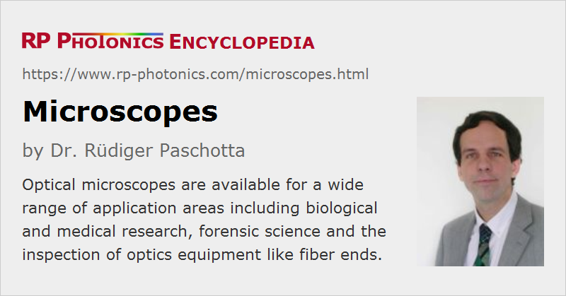

Microscopes
Definition: instruments for seeing very small objects
More specific terms: confocal scanning microscopes, fluorescence microscopes, laser microscopes
German: Mikroskope
Categories: vision, displays and imaging, optical metrology
How to cite the article; suggest additional literature
Author: Dr. Rüdiger Paschotta
Microscopes are instruments which allow one to see in detail very small objects. There is a wide range of different microscopes, utilizing different kinds of radiation for the imaging: in many cases visible light, in other cases infrared or ultraviolet light or even X-rays. Electron microscopes use fast electron beams, allowing for very high resolution because of their small de Broglie wavelength. Also, there are microscopes not working with radiation at all, for example scanning force microscopes, where tiny forces between a very sharp tip and a sample are exploited.
This article focuses on optical microscopes, but not only those of conventional types.
Conventional Optical Microscopes
Conventional optical microscopes work based on imaging with visible light, i.e., in the wavelength region from 400 to 700 nm.
Basic Optical Setup; Magnification
Some moderate degree of magnification (e.g. 20 ×) can be achieved with a loupe or a magnifying glass, which is often a single lens. That concept, however, is quite limiting; it is not practical for strong magnification.
A microscope goes far beyond that and typically involves magnification in two steps, using more than one essential optical component for image formation (compound microscope with a relay lens system). Essentially, a microscope consists of a tube, where on the object side there is a microscope objective and on the viewing side an eyepiece (ocular lens) (see Figure 1).
There is an intermediate image of the object within the instrument, generated by the objective. There can also be an additional lens in the tube (not shown in Figure 1), which together with the objective forms the intermediate image.
The overall microscope magnification can be seen as the product of the magnification of objective and eyepiece. The microscope objective contributes a magnification factor typically between 4 and 100, while the eyepiece gives another factor of 5 or 10, for example. This means that the overall magnification may be as small as 20 in some cases and 1000 in other cases.
Microscopes often contain multiple objectives on a rotatable nosepiece, for example:
- a scanning lens with only 4 × magnification,
- an intermediate 10 × small objective lens, and
- a high-resolution large objective with 40 × or 100 × magnification.
The eye piece may be fixed or also exchangeable.
Note that the definition of the magnification factor in microscopy is based on a comparison of viewing angles between two situations:
- With the microscope, the relaxed eye, focused to infinity, sees an object with a certain viewing angle.
- For comparison, the bare eye sees the same object over a standard distance of 250 mm (to which a healthy eye can accommodate).
A large magnification alone is not necessarily helpful if it only makes images larger without increasing the level of detail. However, the magnification should at least be large enough to allow the human eye to utilize the full image resolution provided by the objective. Therefore, microscope objectives with high numerical aperture, allowing for high resolution, generally also have a high magnification.
As a numerical example, consider the angular resolution of the human eye, which is about one arc minute (not much worse than the diffraction limit for a usual pupil diameter of a couple of millimeters). This corresponds to an object size of ≈73 μm in a viewing distance of 250 mm. A possible 1000 × magnification of a microscope might suggest that objects as small as 73 nm could be seen. However, the actual achievable image resolution is normally a few hundred nanometers, i.e., significantly worse. This shows that a 1000 × magnification goes somewhat beyond what is necessary to exploit the full image resolution, but it may nevertheless be convenient.
Numerical Aperture and Resolution; Working Distance
The image resolution is ultimately limited by the numerical aperture of the used microscope objective. Essentially, this is because at least the first diffraction order of light scattered by closely spaced object points must contribute to the image in order to get such points resolved. Of course, a high optical quality of the objective is also essential for utilizing that resolution potential, but it has been possible for a long time already to achieve more or less diffraction-limited resolution.
There are different ways of calculating the image resolution under slightly different circumstances, but they lead to similar resolution values, which are roughly λ / (2 NA), where λ is the optical wavelength (about 400 to 700 nm) and NA is the numerical aperture. For example, an NA of 0.9 allows for an image resolution of roughly 300 nm with green light and somewhat better with blue light. Such high-NA objectives have a very small focal length (e.g. 2 mm) and a correspondingly small working distance.
The highest resolution, based on the highest NA values around 1.5 to 1.6, is achieved with immersion objectives, where one uses some immersion oil (a liquid with relatively high refractive index) in the narrow gap between the objective and the object. Modern synthetic immersion oils are relatively convenient to use, compared with previously used substances which had a much higher tendency to produce stains and therefore required correspondingly more frequent and intense cleaning efforts. Of course, it is still more convenient to work with a dry objective, which however has a significantly lower resolution limit.
For low magnification, an NA of 0.1 is fully sufficient. This is a typical value for a scanning lens with a magnification of e.g. 4 ×. Such objective lenses are useful for a first orientation, viewing a larger part of the specimen's area. Here, the comparatively long focal length of e.g. 40 mm allows for a substantial working distance.
Depth of Field
In any kind of optical image formation, there is a limited depth of field, i.e., a limited range of distances of objects where sharp imaging is possible. The higher the numerical aperture, the lower the depth of field. Therefore, microscope objectives with a high numerical aperture of e.g. 0.85 result in a very small depth of field of only ≈0.4 μm.
Parts of the object just before and after the focused plane also contributed to the image, but not in a well focused way. Therefore, perfect image quality is achieved when the objects are very thin. This is different, however, in scanning confocal microscopy (see below).
Ergonomic Viewing Direction
It is often useful to have the object oriented in a horizontal way, while having a viewing direction which is not vertical, but at some more convenient angle for ergonomic use in a sitting position. Therefore, the light coming from the object is usually deflected with a prism, for example.
Microscope Standards and Tube Lengths; Finite-corrected and Infinity-corrected Objectives
Obviously, the tube length is an important design parameter influencing the image formation if the objective is meant to produce an intermediate image at a finite distance. (The object is then supposed to be placed a little below the front focal plane of the objective, and the objective is designed for minimum image distortions in that configuration; it is called finite-corrected.) Therefore, such microscope objectives are always designed for a certain tube length. This has been common in older microscopes.
There are two common microscope standards, namely the DIN (Deutsche Industrie Norm) standard and the Japanese “JIS” standard; these differ in terms of tube length. According to DIN, the mechanical tube length is 160 mm, measured from the nosepiece opening, where the objective is mounted, to the top edge of the tube where the eyepiece is inserted. The optical tube length, defined as the distance between the rear focal point of the objective to the front focal point of the eyepiece, is somewhat shorter. For comparison, the “JIS” tube length is a little longer (170 mm), and others have a tube length of even 215 mm. The 160 millimeter tube length has also been standardized by the Royal Microscopical Society (RMS), but that did not stop some manufacturers from using different values, perhaps because they did not want to give up their product line of objectives.
Obviously, the rules for defining the tube length become more complicated for the common configurations with additional beam deflection between objective and eyepiece.
Microscope objectives for modern professional instruments are usually designed for infinity correction. This means that the object is supposed to be placed exactly in the front focal plane of the objective, and the generated intermediate image lies in infinite distance. It is then the task of an additional tube lens to form a real image in the intermediate image plane close to the eyepiece (at its front focal point). The advantages of using infinity-corrected objectives are essentially the following:
- The propagation length between the objective and the tube lens is no longer critical.
- It is then also possible to insert additional optical elements, e.g. beam splitters for injecting illumination light into the beam path or polarizers for polarization microscopy, without disturbing the image correction. There have also been ways to accomplish that in older microscopes with finite correction distance, but those often had side effects like producing ghost images and losing some image intensity.
Due to those advantages, which became more important with increasing complexity of typical microscopic instruments, it has become standard to use infinity-corrected microscope objectives.
From a user perspective, it is not essential to understand the details e.g. how exactly the mechanical and optical tube length is measured. However, it is essential to select microscope objectives which are fully compatible with the used microscope, as indicated by the microscope standard; otherwise, the image quality may be reduced significantly from non-compensated spherical aberrations.
Object Illumination
The illumination of the object is a critical factor for the achievable image quality. Depending on the type of object, different directions of illumination can be appropriate:
- Transparent objects are often illuminated from below (backlight illumination), i.e., in transmission. Transmission microscopy is widely used in biology, for example. Without the object, the whole field of view is bright, if the illumination light arrives roughly along the optical axis; therefore, one calls this bright-field microscopy.
- Better contrast is often achieved with dark-field illumination, where the light comes from such angular directions (from either side of the object) that the field of view remains dark without the object, and only light scattered by the object is seen. A potential disadvantage is that only a small amount of light contributes to the image, so that rather bright illumination is required.
- Non-transparent objects like metallic samples, ceramics, plastics or semiconductor devices need to be illuminated from top, i.e., viewed in reflection. Particularly for higher magnifications, the microscope objective leaves little space for injecting light from the side; therefore, in a reflection microscope the illumination light needs to be sent through the objective, injected e.g. through a beam splitter in the beam path to the eyepiece (epi-illumination). The reflectivity of the beam splitter is chosen as a compromise between efficient light injection and efficient light transfer from the object to the eyepiece. It may be around 50% if one is limited by the power of the light source, or less in other cases, where the object is light sensitive. Alternatively, one may use a device where illumination light is reflected in the peripheral regions only, while the signal light gets through a hole or a non-silvered region of a plate.
Of course, it would be detrimental to image the coiled filament of a lamp to the sample; this could create an unwanted filament image. It is desirable to achieve a homogeneous illumination despite an inhomogeneous shape of the emitting object in the lamp. The dominating method for high quality microscopes is Köhler illumination, where several optical elements such as a field diaphragm and a condenser are employed. The arrangement is made such that there are two well separated sets of conjugate planes (interlaced beam path): an image-forming plane set (with specimen, intermediate image plane and the eye's retina) and an illumination plane set with lamp filament, condenser diaphragm, objective real focal plane and eye iris. Köhler illumination allows one to exploit the full resolution potential of the microscope objective without losing much of the light. Alternative solutions, based on optical diffusers, lead to higher light losses.
While some microscopes are specialized to one particular illumination method, others are quite versatile, giving the user the choice between transmission and reflection mode, for example.
The used light source is often a tungsten–halogen lamp, producing bright white light. Due to the rather low efficiency of light generation and delivery, the lamp housing can become rather hot. Recently, light emitting diodes (LEDs) have also been used for microscope illumination systems.
With a movable mirror in the microscope, one may switch between illumination from the top or from the bottom.
Holding the Specimen
The object under investigation must be properly fixed and positioned below the microscope objective. In most cases, the specimen is held in a horizontal position, with viewing from the top (in z direction). In biology, for example, the specimen is typically placed on a microscope slide and covered with a 0.17 mm thick cover slip (cover glass), which rests on it without further measures or is fixed with some clips or clamps. The spherical aberrations caused by the cover slip need to be compensated by the objective for large NA values (e.g. >0.75 for dry objectives, >1 for immersion objectives). Some microscopes have an additional knob for adjusting that compensation when e.g. a plate of non-standard thickness is used. Of course, solid samples generally do not need a cover slip and therefore also not the corresponding compensation.
There are also inverted microscopes, where the illumination is from the top and viewing from the bottom, of course with a deflection applied for obtaining a convenient viewing angle. The essential advantage of inverted microscopes is to leave substantial working space above the specimen: the illuminator does not merely have to be as close to the specimen as an objective for high resolution.
Ideally, there are high-quality opto-mechanics for precisely translating the sample in x, y and z direction. Particularly for high magnification, the depth of field is rather low, so that precise positioning also in z direction is important. In many cases, however, it is sufficient to move the optical setup up and down with a large knob, offering limited precision.
Modified Imaging Methods
Imaging formation is often based on a variable absorbance or transmittance of the sample, or on light scattered at features of the object. However, there are modified techniques for getting image contrast:
- Phase contrast microscopy uses difference in optical phase delay via interference.
- Polarization microscopy utilizes changes of polarization direction caused by birefringence in a sample. Here, one uses a polarizer for the incident light and another one as analyzer after the sample.
- Differential interference contrast microscopy can be used to sensitively detect relief features. A birefringent prism (e.g. a Nomarski prism) is placed in the space just above the objective, and a polarizer is installed in the vertical illuminator. The polarized light from the illuminator is split into two slightly displaced portions by the prism. At a second polarizer, the analyzer, one obtains an interference signal if the two slightly displaced beams are reflected at positions of different elevations on the object.
Such methods can reveal structures in objects which can hardly be seen with other methods.
Another possibility for improving the visibility of structures is to use staining with certain dyes, which preferentially attach to certain parts of samples – for example, to organelles within biological cells. That increases the efforts of sample preparation, but can lead to substantially improved images.
Image Orientation
Simple microscopes produce inverted images. This is not a problem for many applications, but inconvenient e.g. in cases where samples need to be manipulated under a microscope. Therefore, some microscopes contain additional optical elements for obtaining non-inverted images.
Stereo Microscopes
While many microscopes have only a single eyepiece, there are also binocular microscopes with two eyepieces and one or two objectives. The two observing eyes obtain images from slightly different directions, allowing for stereoscopic vision with a three-dimensional impression.
The requirement of dual optics is of course a major limiting factor. Such microscopes are usually used only for viewing in reflection with moderate magnification – roughly an order of magnitude lower than for conventional microscopes. For some stereo microscopes, objectives cannot easily be exchanged. However, they may have a zoom function, i.e., they allow an adjustment of the magnification in some range.
Microscope Cameras
Most microscopes are equipped with an eyepiece for direct viewing. However, there are also microscopes with a camera, producing either photographs or video images; devices with digital cameras, as have become dominant, are also called digital microscopes. It is also possible to have an eyepiece plus a camera for use at the same time, or for switching between both modes. There are also camera adapters which can be inserted instead of eyepieces; they may contain additional optics for adjusting the image size and resolution.
While early microscope cameras used a photographic film, modern devices are based on an electronic image sensor and are typically connected to a computer, e.g. with a USB cable. A large computer screen may actually be very convenient for inspecting images, providing easy viewing even for more than one person. Images or videos can conveniently be recorded for later inspection. Further, one may apply computational techniques for image improvement.
Scanning Optical Microscopes
Conventional optical microscopes as explained above provide a complete image in every moment. Some modified techniques are used in scanning optical microscopes, where only the information on a single image point is provided at the time, and a complete two-dimensional or three-dimensional image is built up (typically in a computer) by systematically moving the sample and/or an imaging beam into our three dimensions.

An example is a confocal scanning laser microscope (Figure 2), where a diffraction-limited collimated laser beam is tightly focused onto the sample. The light coming back from the focus point (e.g. through scattering in the sample) is imaged to a small pinhole and transmitted to a photodetector. Light coming from other longitudinal or transverse positions in the sample is largely suppressed:
- At other lateral positions, there is hardly any incident laser light, except somewhat before and after the beam focus due to the substantial beam divergence.
- Light from positions in the sample before or after the beam focus cannot well get through the pinhole, because its focus position is not in the plane of the pinhole.
For operation in transmission, laser illumination may be done through a second microscope objective on the other side of the sample.
Fluorescence Microscopes
The confocal operation principle is also often used in fluorescence microscopes. Here, one does not detect scattered laser light, but rather fluorescence light. The laser light itself may be suppressed by an optical filter as also shown in Figure 1.
See the article on fluorescence microscopy for more details. It explains, for example, how sub-diffraction resolution (super-resolution) can be achieved with certain techniques.
Near Field Scanning Microscopes
Near field scanning microscopes (NSOMs) have been developed which can produce an image resolution beyond the diffraction limit. Here, one uses a very tiny fiber tip for scanning the surface of a sample. The very small distance between the tip and the sample is stabilized with a suitable feedback mechanism, usually using contact forces.
There are different operation modes of such microscopes:
- One may use the tip only for illuminating a part of the specimen with laser light emerging with a beam radius well below one optical wavelength. Collection of the light to be detected is done elsewhere, for example on the bottom of the sample.
- The opposite approach is to illuminate a sample from the bottom and use the tip for collecting signal light.
- In reflection mode, both illumination and light collection occurs through the tip. Alternatively, one may illuminate the sample from the top at the side of the tip and collect reflected light through the tip.
One may apply additional techniques for obtaining contrast, for example involving polarization, phase contrast, differential interference contrast or staining.
Microscopes for Specific Applications
Microscopes are often optimized for certain typical applications. Some examples:
- General-purpose laboratory microscopes are often optimized not only for image quality and resolution, but also for flexibility. For example, one may easily switch between 4 or 6 different microscope objectives, which can also be replaced, and between different illumination methods.
- There are fiber end inspection microscopes, which are useful e.g. for checking the success of fiber cleaving or during fusion splicing.
- Other industrial inspection microscopes are used for other specific inspection purposes, e.g. for microelectronics.
- There are compact hand-held camera microscopes, e.g. for connection to a smartphone or tablet providing the display, with modest magnification and image quality.
Suppliers
The RP Photonics Buyer's Guide contains 35 suppliers for microscopes. Among them:
Questions and Comments from Users
Here you can submit questions and comments. As far as they get accepted by the author, they will appear above this paragraph together with the author’s answer. The author will decide on acceptance based on certain criteria. Essentially, the issue must be of sufficiently broad interest.
Please do not enter personal data here; we would otherwise delete it soon. (See also our privacy declaration.) If you wish to receive personal feedback or consultancy from the author, please contact him e.g. via e-mail.
By submitting the information, you give your consent to the potential publication of your inputs on our website according to our rules. (If you later retract your consent, we will delete those inputs.) As your inputs are first reviewed by the author, they may be published with some delay.
See also: microscope objectives, ocular lenses, laser microscopy, fluorescence microscopy, loupes, magnifying glasses
and other articles in the categories vision, displays and imaging, optical metrology
|  |
If you like this page, please share the link with your friends and colleagues, e.g. via social media:
These sharing buttons are implemented in a privacy-friendly way!